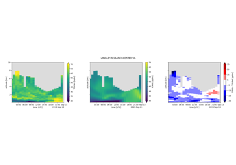
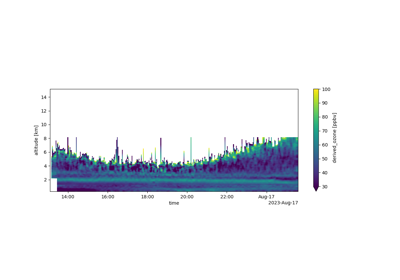

pytolnet Examples¶
The list of examples will grow, but currently includes a plotting script and a CMAQ comparison. The plotting script retrieves data and reports a statistical description. The CMAQ comparison compares a day from the GSFC TOLNet to a day from EPA’s EQUATES.
The examples assume that you have installed pytolnet:
python -m pip install git+https://github.com/barronh/pytolnet.git
After that, you can copy or download the example code to run it.

TOLNet Ozone CMAQ Comparison Plot
TOLNet Ozone CMAQ Comparison Plot

TOLNet Ozone Curtain Plot